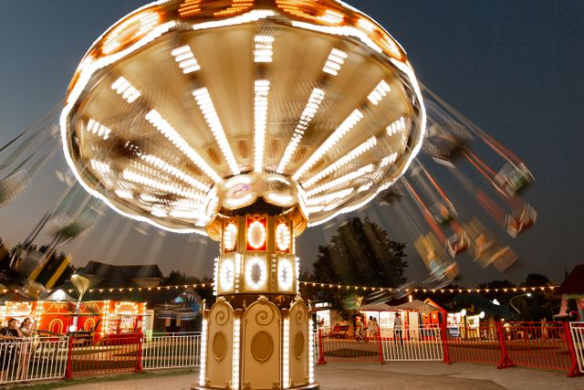
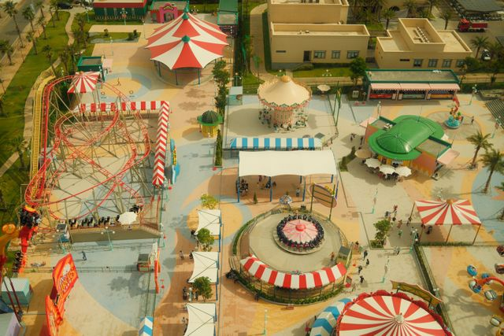

Photo by Vladimir Gladkov from Pexels: Long exposure shot of chain swing ride
Before the advancement of technology. Do you remember how life was like when we actually enjoy just being outside in nature? Actually socializing and having fun with other humans? Let's go back and remember some of the outdoor fun that may have been lost in our society.
STORY TIME
I remember going to my grandmother house as a little girl. My mom taking me and my brother to see our grandmother, aunts and cousins. My aunt would call the fire department to come and turn the fire hydrant on so we can play in the water. Smoke in the air from the grill while the amazing smell of burgers and kebabs was cooking on the grill. Hearing the music blasting in the backyard. Me, my brother and cousins going back and forth to get some snacks like: boston baked beans, sunflower seeds, hubba bubba gum, sour power straws, chips and blow pop lolipops. (It's crazy all of these items back then would cost at most $1-$2 total compare to what they probably cost now). But the fun really kicked off as the night came and we would start playing hide and seek with the other kids that was on my grandmothers block. While the adults sat around having conversations about their childhood memories, playing card games and dancing to the music that came out during their youth.

Photo by Phil Nguyen from Pexels: Top view of an amusement park
Choose where you want to go next